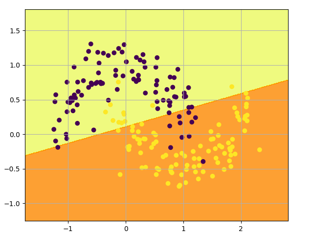
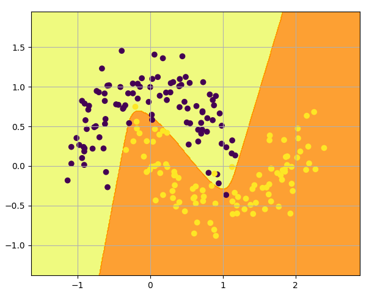
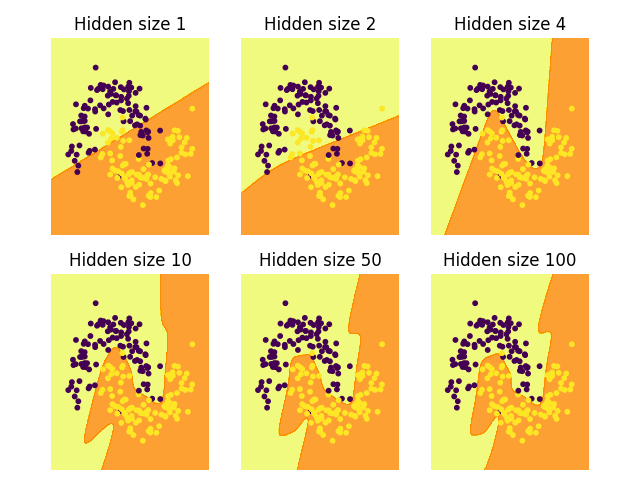

1.5 手写神经网络
使用 NumPy 实现数据的分类！
创建日期: 2025-04-02
在本节中我们将从头实现一个 3 层的神经网络，全部实现代码在文件 moon_classify.py 中。我们不会推导所有需要的数学知识，但我会尝试直观地解释我们正在做的事情。我还会指出一些资源，供阅读详细信息。
在这里，我假设您熟悉基本的微积分和机器学习概念，例如，您知道什么是分类和正则化。理想情况下，您还了解一些优化技术（如梯度下降）的工作原理。但即使您不熟悉上述任何内容，这篇文章仍然会很有趣！
1.5.1 生成数据集
让我们首先生成一个可以使用的数据集。幸运的是，scikit-learn 有一些有用的数据集生成器，所以我们不需要自己编写代码。我们将使用 make_moons 函数：
rng = numpy.random.default_rng(0)
x, y = sklearn.datasets.make_moons(200, noise=0.2)
pyplot.scatter(x[:, 0], x[:, 1], s=40, c=y)
我们生成的数据集有两个类别，分别绘制为红点和蓝点。你可以将蓝点视为男性患者，将红点视为女性患者，x 轴和 y 轴为医学测量值。
我们的目标是训练一个机器学习分类器，根据 x 和 y 坐标预测正确的类别（男性或女性）。请注意，数据不是线性可分的，我们无法画出一条直线来区分这两个类别。这意味着线性分类器（如逻辑回归）将无法拟合数据，除非您手动设计出适用于给定数据集的非线性特征（如多项式）。
事实上，这是神经网络的主要优势之一。你不需要担心特征工程。神经网络的隐藏层会帮你学习特征。
1.5.2 逻辑回归
为了演示这一点，我们训练一个 逻辑回归 (Logistic Regression) 分类器。它的输入是 x 和 y 值，输出是预测的类别 0 或者 1 ，为了方便起见，我们使用scikit-learn中的 Logistic 回归类：
该图显示了我们的 Logistic 回归分类器学习到的决策边界。它使用直线尽可能好地分离数据，但无法捕捉数据的“月亮形状”：

1.5.3 训练神经网络
现在让我们构建一个 3 层神经网络，其中包含一个输入层、一个隐藏层和一个输出层。输入层的节点数由数据的维数（2）决定。同样，输出层的节点数由类别数（也是 2）决定。（因为我们只有 2 个类，所以我们实际上可以只用一个输出节点预测 0 或 1，但有 2 个输出节点可以让网络以后更容易扩展到更多类）。网络的输入将是 x 和 y 坐标，其输出将是两个概率，一个用于类 0（“女性”），一个用于类 1（“男性”）。它看起来像这样：

我们可以选择隐藏层的维数（节点数）。我们放入隐藏层的节点越多，我们能够拟合的函数就越复杂。但更高的维数是有代价的。首先，需要更多的计算来做出预测和学习网络参数。参数数量越多也意味着我们更容易过度拟合数据。
如果选择隐藏层的大小，这里有些通用的指导和建议，它取决于我们具体的需求，有时候看上去更像是艺术而非科学。稍后我们将尝试调整隐藏层的节点数量，看看它如何影响我们的输出。
我们还需要为隐藏层选择一个激活函数，激活函数将层的输入转换为其输出。非线性激活函数使我们能够拟合非线性假设。常见的激活函数有 tanh ，sigmoid 或者 ReLU 。我们会使用 tanh ，它在很多场景中表现良好。这些函数的一个很好的特性是它们的导数可以用原始函数值计算。例如 \(tanh(x)\) 的导数是 \(1 - tanh^{2}x\) 。这是有用的，因为它允许我们计算 \(tanh(x)\) 一次，然后在获取导数时使用同样的数值。
因为我们希望网络输出概率，所以输出层的激活函数是 softmax ，它是一种将原始分数转换为概率的方法。如果你熟悉逻辑函数，可以将 softmax 视为其对多个类别的泛化。
1.5.3.1 如何预测
我们的网络使用前向传播进行预测，这只是一堆矩阵乘法和我们上面定义的激活函数的应用。如果 \(x\) 是网络的二维输入，那么我们计算出来的预测 \(\hat{y}\) 也是二维的，如下所示：
\(z_1 = xW_1 + b_1\)
\(a_1 = tanh(z_1)\)
\(z_2 = a_1W_2 + b_2\)
\(a_2 = \hat{y} = softmax(z_2)\)
\(z_i\) 是第 \(i\) 层的输入，\(a_i\) 是经过激活函数后第 i 层的输出。\(W_1, b_1, W_2, b_2\) 是我们网络的参数，通过训练数据会进行学习。你可以把它们想象成在网络层之间转换数据的矩阵。查看上面的矩阵乘法，我们可以计算出这些矩阵的维数。
如果我们的隐藏层有 500 个节点，那么 \(W_1 \in \mathbb{R}^{2 \times 500}\) ，\(b_1 \in \mathbb{R}^{500}\) ，\(W_2 \in \mathbb{R}^{500 \times 2}\) ， \(b_2 \in \mathbb{R}^{2}\) 。现在您明白了为什么如果我们增加隐藏层的大小，我们就会有更多的参数。
1.5.3.2 学习参数
学习参数意味着找到参数 \(W_1, b_1, W_2, b_2\) 使我们的训练数据误差最小。但是怎么定义误差呢？我们将测量误差的函数称为损失函数。对 softmax 输出一个通常的选择是交叉熵损失（也叫做负对数）。如果我们有 \(N\) 个训练样本和 \(C\) 个类别，那么我们的预测概率 \(\hat{y} \) 相对于真实标签 \(y\) 的损失可以通过下面的公式给出：
这个公式看起来复杂，但它实际上做的就是把训练样本加起来，如果我们预测错了类别，就把损失加起来。可以看个具体的例子，假如类别为 1，预测概率为 0.8 ，那么它的损失为：
两个概率分布越远，\(y\) （正确的标签）和 \(\hat{y}\) （预测概率值）越大，损失就会越大。通过找到最小化损失的参数，我们可以最大化训练数据的似然值。
可以使用梯度下降法来找到这个最小值。我们将实现最普通的梯度下降法，也称为固定学习率的批量梯度下降法。诸如随机梯度下降法（SGD）或小批量梯度下降法等变体在实践中通常表现更好。所以，如果你认真考虑，可以尝试其中一种，并且理想情况下，你还可以随着时间的推移降低学习率。
作为输入，梯度下降需要损失函数关于我们参数的梯度（导数向量）：\(\frac{\partial{L}}{\partial{W_1}}, \frac{\partial{L}}{\partial{b_1}}, \frac{\partial{L}}{\partial{W_2}, \frac{\partial{L}}{\partial{b_2}}}\) 。为了计算这些梯度，我们使用了著名的反向传播算法，这是一种从输出开始高效计算梯度的方法。我不会详细解释反向传播的工作原理，但网上有很多很棒的解释。
应用反向传播公式，我们发现以下内容：
\(\delta_3 = \hat{y} - y\)
\(\delta_2 = (1 - {tanh}^2z_1) \cdot \delta_3 {W_2}^{\top}\)
\(\frac{\partial{L}}{\partial{W_2}} = {a_1}^{\top} \delta_3\)
\(\frac{\partial{L}}{\partial{W_2}} = \delta_3\)
\(\frac{\partial{L}}{\partial{W_1}} = x^{\top}\delta_2\)
\(\frac{\partial{L}}{\partial{b_1}} = \delta_2\)
1.5.3.3 网络实现
接下来就是要实现它们，我们从定义一些有用的变量和参数开始：
num_examples = len(X) # training set size
nn_input_dim = 2 # input layer dimensionlity
nn_output_dim = 2 # output layer dimensionality
# gradient descent parameters
epsilon = 0.01 # learning rate fro gradient descent
reg_lambda = 0.01 # regularization length实现损失函数，用来评估模型的表现：
# Helper function to evaluate the total loss on the dataset.
def calculate_loss(model):
W1, b1, W2, b2 = model['W1'], model['b1'], model['W2'], model['b2']
# Forward propagation to calculate our predictions.
z1 = X.dot(W1) + b1
a1 = numpy.tanh(z1)
z2 = a1.dot(W2) + b2
exp_scores = numpy.exp(z2)
probs = exp_scores / numpy.sum(exp_scores, axis=1, keepdims=True)
# Calculating the loss
correct_logprobs = -numpy.log(probs[range(num_examples), y])
data_loss = numpy.sum(correct_logprobs)
# Add regulatization term to loss (optional)
data_loss += reg_lambda / 2 * (numpy.sum(numpy.square(W1)) + numpy.sum(numpy.square(W2)))
return 1.0 / num_examples * data_loss还实现一个辅助函数来计算网络的输出，它按照上面定义的方式进行前向传播，并返回概率最高的类：
def predict(model, x):
W1, b1, W2, b2 = model['W1'], model['b1'], model['W2'], model['b2']
# Forward propagation
z1 = x.dot(W1) + b1
a1 = numpy.tanh(z1)
z2 = a1.dot(W2) + b2
exp_scores = numpy.exp(z2)
probs = exp_scores / numpy.sum(exp_scores, axis=1, keepdims=True)
return numpy.argmax(probs, axis=1)最后看看训练神经网络函数，它利用我们之前找到的反向传播导数来实现批量梯度下降：
# This function learns parameters for the neural network and returns the model.
# - nn_hdim: Number of nodes in the hidden layer
# - num_passes: Number of passes through the training data for gradient descent
# - print_loss: If True, print the loss every 1000 iterations
def build_model(nn_hdim, num_passes=2000, print_loss=False):
# Initialize the parameters to random values. We need to learn these.
numpy.random.seed(0)
W1 = numpy.random.randn(nn_input_dim, nn_hdim) / numpy.sqrt(nn_input_dim)
b1 = numpy.zeros((1, nn_hdim))
W2 = numpy.random.randn(nn_hdim, nn_output_dim) / numpy.sqrt(nn_hdim)
b2 = numpy.zeros((1, nn_output_dim))
# This is what we return at the end
model = {}
# Gradient descent. For each batch...
for i in range(0, num_passes):
# Forward propagation
z1 = X.dot(W1) + b1
a1 = numpy.tanh(z1)
z2 = a1.dot(W2) + b2
exp_scores = numpy.exp(z2)
probs = exp_scores / numpy.sum(exp_scores, axis=1, keepdims=True)
# Backpropagation
delta3 = probs
delta3[range(num_examples), y] -= 1
dW2 = (a1.T).dot(delta3)
db2 = numpy.sum(delta3, axis=0, keepdims=True)
delta2 = delta3.dot(W2.T) * (1 - numpy.power(a1, 2))
dW1 = numpy.dot(X.T, delta2)
db1 = numpy.sum(delta2, axis=0)
# Add regularization terms (b1 and b2 don't have regularization terms)
dW2 += reg_lambda * W2
dW1 += reg_lambda * W1
# Gradient descent parameter update
W1 += -epsilon * dW1
b1 += -epsilon * db1
W2 += -epsilon * dW2
b2 += -epsilon * db2
# Assign new parameters to the model
model = { 'W1': W1, 'b1': b1, 'W2': W2, 'b2': b2}
# Optionally print the loss.
# This is expensive because it uses the whole dataset, so we don't want to do it too often.
if print_loss and i % 100 == 0:
print('Loss after iteration ' + str(i) + ': ' + str(round(calculate_loss(model), 4)))
return model1.5.3.4 效果
让我们看看设置隐藏层大小为 3， 网络会发生什么：
# Build a model with a 3-dimensional hidden layer
model = build_model(3, print_loss=True)
# Plot the decision boundary
plot_decision_boundary(X, lambda x: predict(model, x))
pyplot.show()看起来很不错。我们的神经网络能够找到一个成功区分类别的决策边界：

1.5.4 修改隐藏层
在上面的例子中，我们选择的隐藏层的大小为 3.现在让我们了解一下改变隐藏层大小对结果的影响：

我们可以看到，低维的隐藏层能够很好地捕捉数据的总体趋势。高维隐藏层容易过拟合。它们会“记忆”数据，而不是拟合整体形状。如果我们在单独的测试集上评估我们的模型，隐藏层规模较小的模型可能会表现得更好，因为它具有更好的泛化能力。我们可以通过更强的正则化来抵消过拟合，但选择合适的隐藏层大小是一个更经济的解决方案。